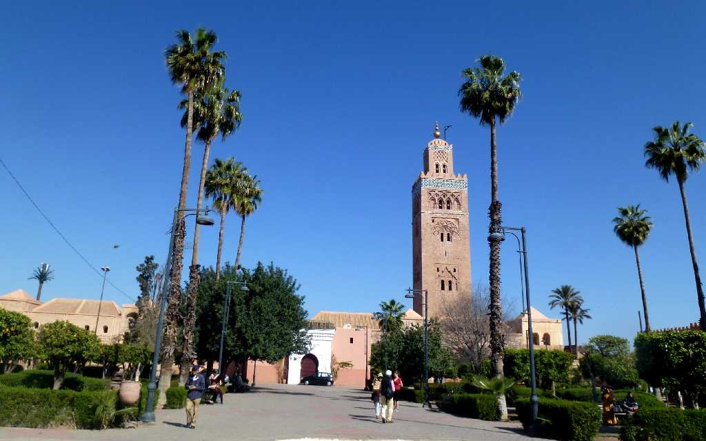
Koutoubia Marrakech
マラケシュのシンボル１２世紀に建てられた高さ７７ｍのミナレット ベルベル語で神の国を意味するマラケシュはアトラス山脈の山麓に位置し南方産の真珠と呼ばれてきた
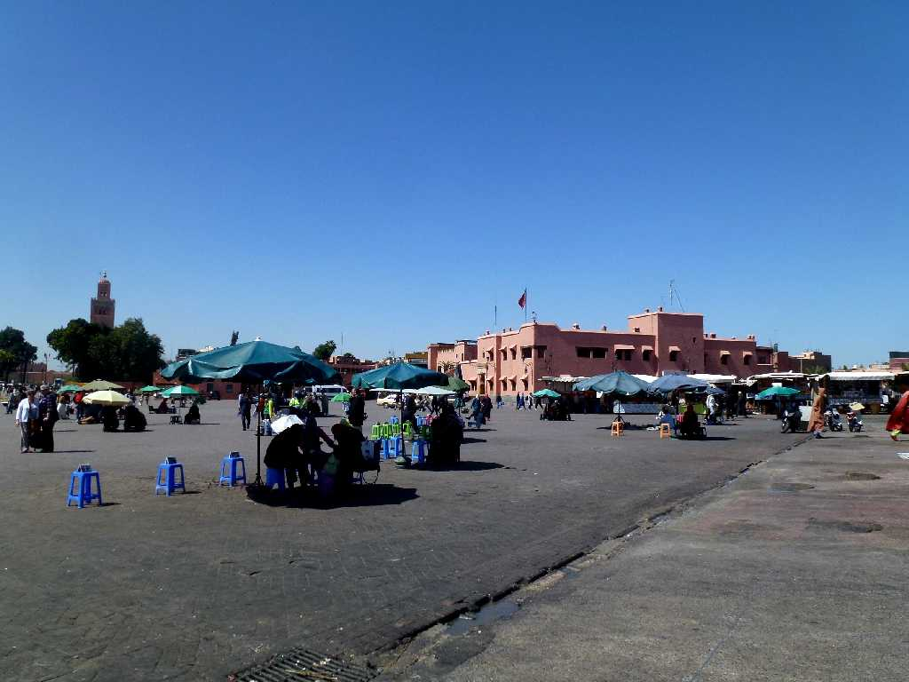
Place Jemaa El Fna Marrakech
赤い城壁の街マラケシュの心臓部と云われるジャマエルフナ広場
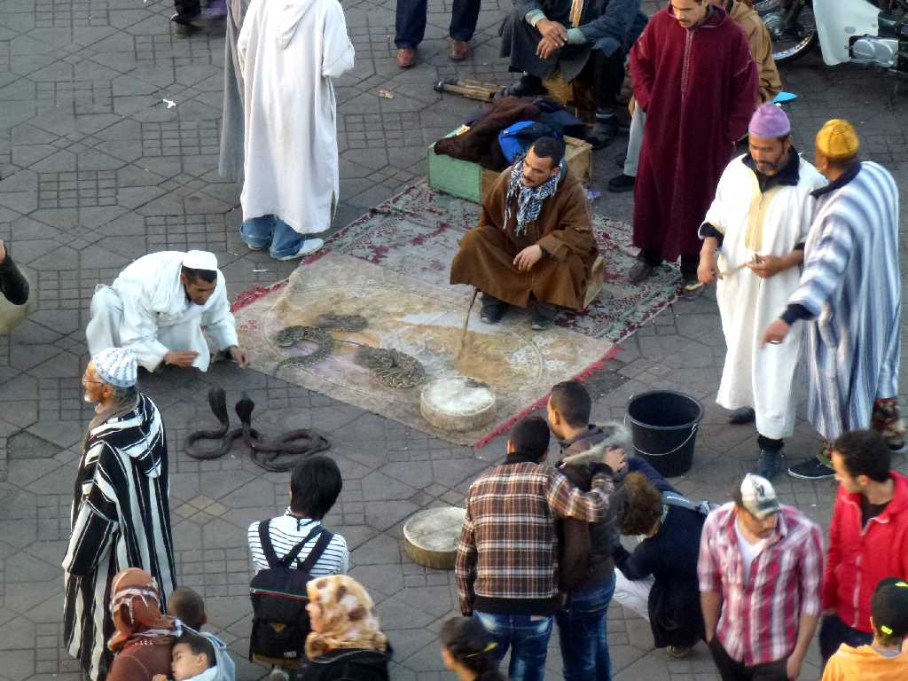
Place Jemaa El Fna Marrakech
毎日モロッコ中の大衆芸がここに集まっていると云われる大道芸の中心地 なかでも蛇使いは最も古い伝統芸の一つ
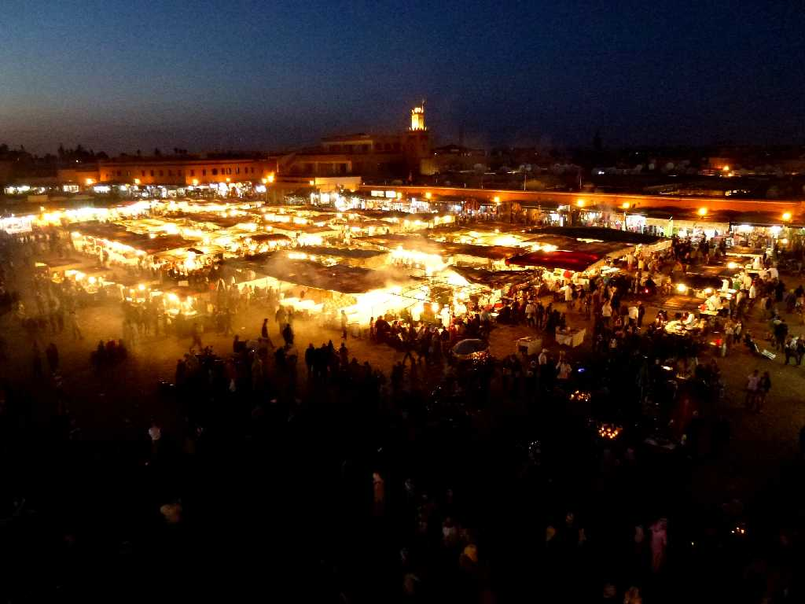
Night Place Jemaa El Fna Marrakech
毎日がお祭りの広場と云われるジャマエルフナ広場には夜になると多くの屋台が現れる
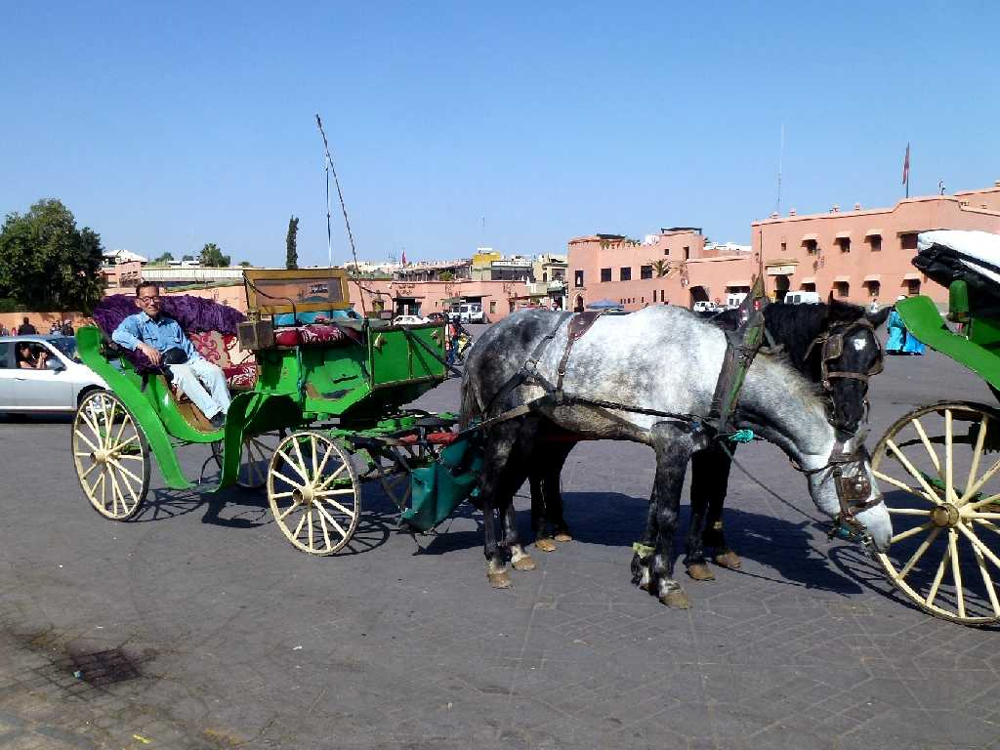
March 16 2014 Place Jemaa El Fna
ホテルからジャマエルフナ広場まで名所旧跡を馬車で観光
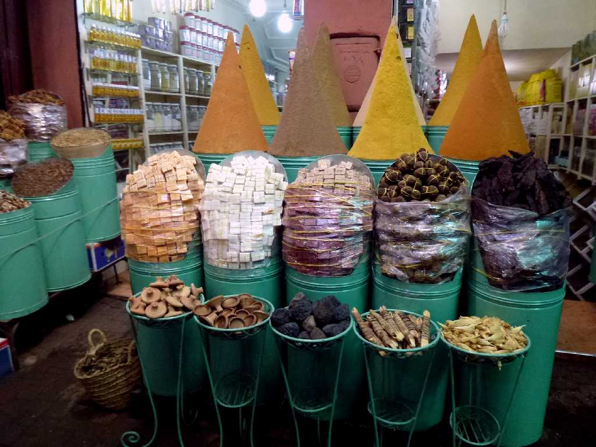
Medina Marrakech
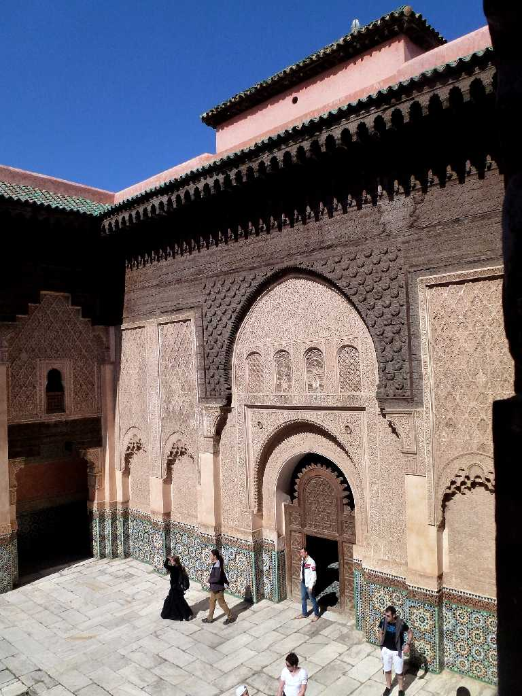
Ben Youssef Madrasa Marrakech
とても細かい彫刻が残るアンダルシアの最高傑作と云われるベンユーセフ神学校
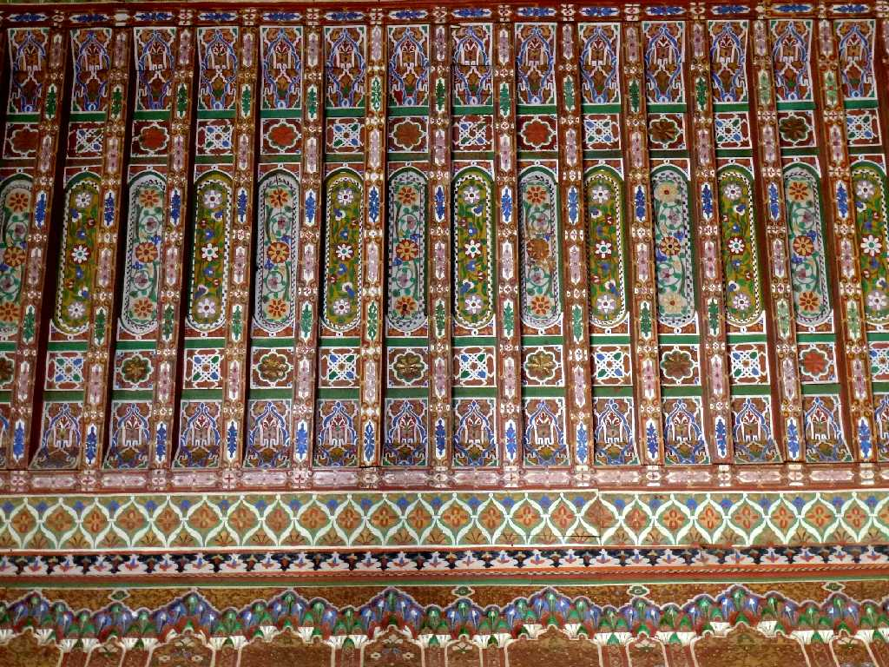
Palace Bahia Marrakech
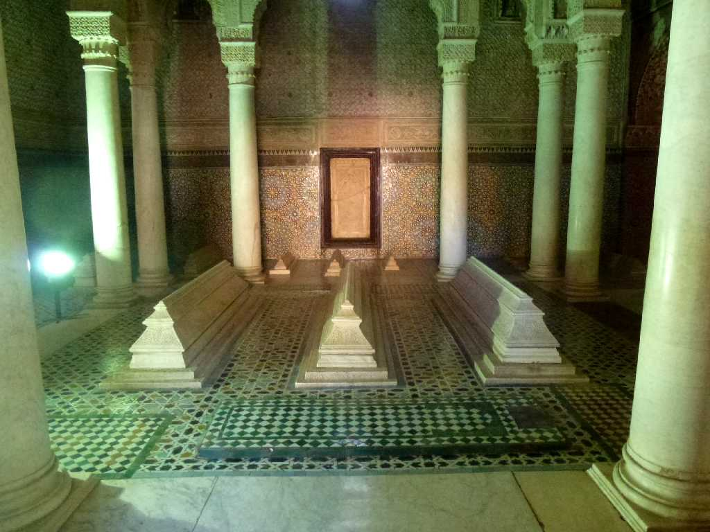
Saadian Tombs Marrakech
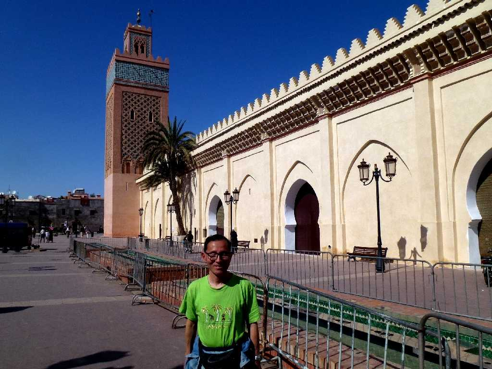
March 15 2014 Saadian Tombs
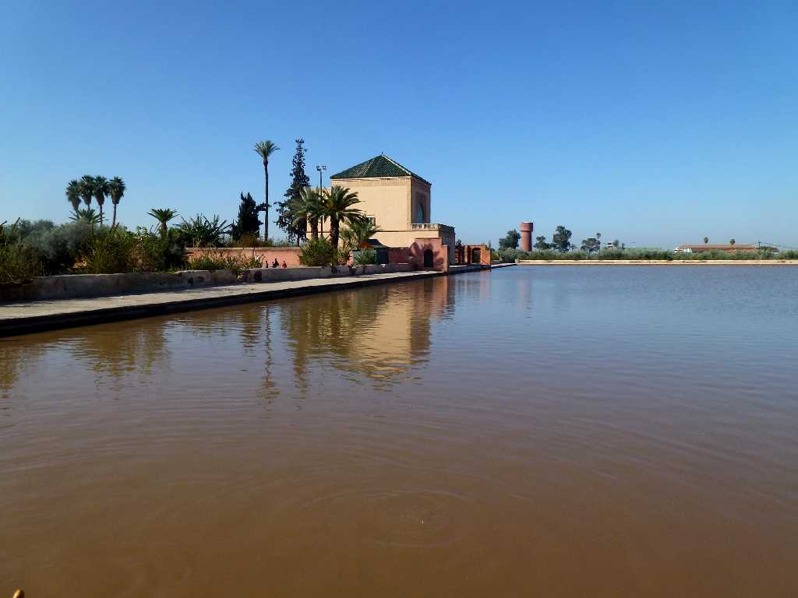
Menara Marrakech
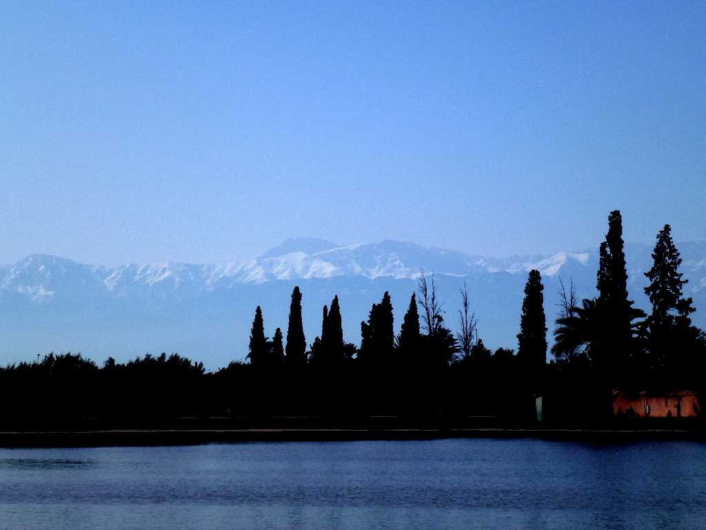
4,167m Jabel Toubkal Menara Marrakech
北アフリカ最高峰トゥブカル山４,１６７ｍ